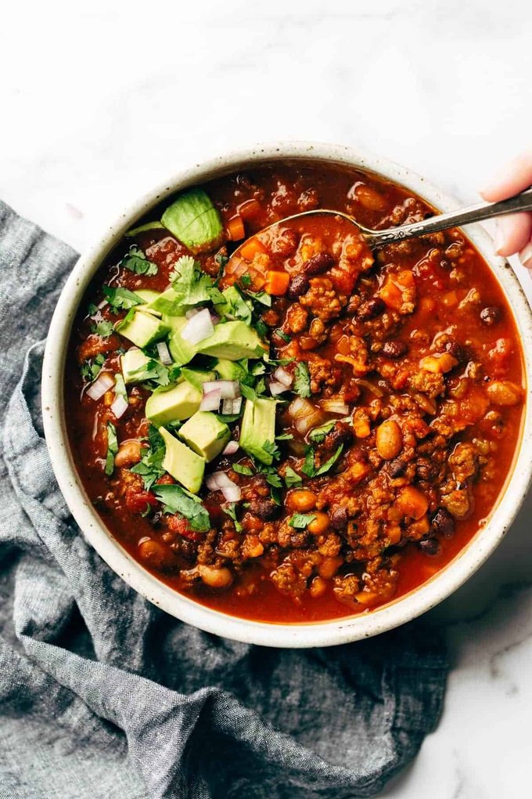

Sunday Chili

A Lazy Sunday Meal
It’s thick and appropriately chunky, spicy and extremely flavorful without being hot, balanced just right between meat, beans, and vegetables, and excellently scoopable (what else is chili for, really).
And not to mention it does that chili magic thing where it gets better at leftovers.
Ingredients
- 2 teaspoonssalt
- 1 1/2 pounds ground beef
- 6 slices bacon, cut into small pieces
- half of an onion, diced
- 4 cloves garlic, minced
- 1 jalapeno, minced
- 4 carrots, minced (optional)
- 2 1/2 tablespoons chili powder
- 2 tablespoonscumin
- 1 tablespoonoregano
- 1 teaspoongarlic powder
- 3–4 tablespoonstomato paste
- 1 28–ounce can fire roasted crushed tomatoes
- 2 14–ounce cans beans,rinsed and drained (I like black beans and pinto beans)
- 2 cups beef or chicken broth(plus more to thin as needed)
- toppings: avocado, cheese, sour cream, tortilla chips, red onion, cilantro
Steps
- Mix salt with ground beef. Set aside so it can get nice and salty while you prep the other ingredients. In a large Dutch oven over medium high heat, fry your bacon pieces until crispy. Drain on paper towel lined plates. Pour off most of the bacon fat, but leave 1-2 tablespoons for sautéing.
- Add the onion, garlic, jalapeno, and carrots. Sauté until soft and fragrant.
- Add the ground beef and spices. Brown until fully cooked.
- Add the tomato paste. Sauté for 2-3 minutes.
- Add tomatoes, beans, broth, and bacon. Bring to a low simmer. Cover it and let it hang out over low heat for at least 30-45 minutes, but ideally 2+ hours (this helps the flavors develop and this is why it’s Sunday chili).You can alternate between keeping it over a low flame and just letting it rest in the hot pot. It will thicken, so use extra water or broth to thin it out to desired consistency.
- BOOM! Top with all your favorite toppings. Make plans to revisit this again next Sunday.